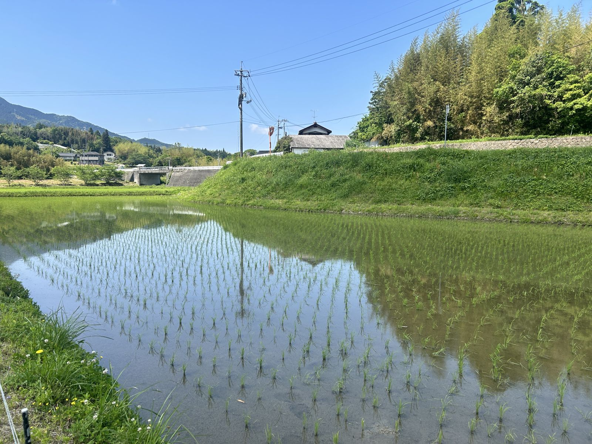
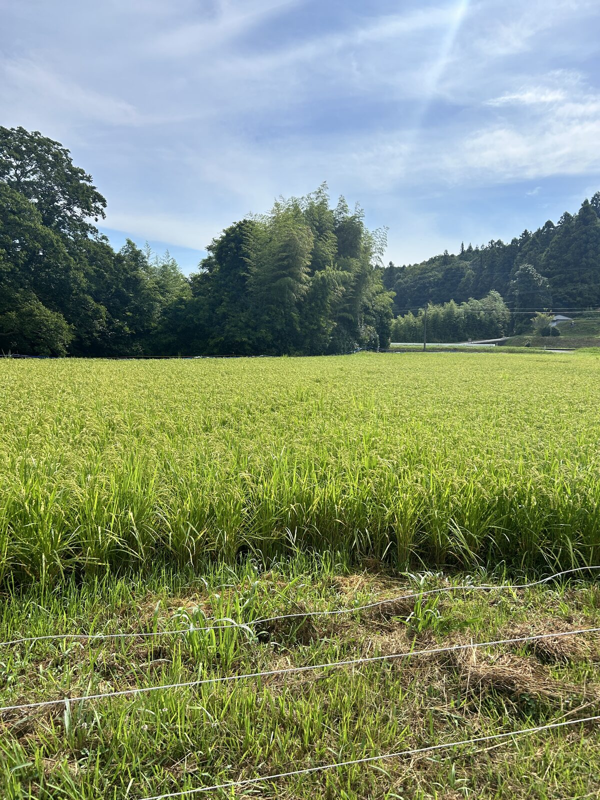

STORY
子供の頃、夏休みの車窓から見た一面の田んぼ。風に「さーっ」となびく稲。あの景色が、ずっと記憶の底にあった。
大人になり、年に数回通うようになった西日本の小さな集落で、あの景色に再会した。でも通うたびに、耕作放棄地が少しずつ増えていく。
そして2024年夏、令和の米騒動。家族のために米を探してスーパーをはしごした夜、知った。米を作る農家の平均年齢は71歳。70歳以上が6割。あの景色は、放っておけば消える。
消防士として15年以上、人の命を守ってきた。守るべきものは、食卓にも、田舎にも、次の世代の選択肢にもある——そう気づいたとき、転身を決めた。
人生の残りゲージは、およそ半分。消費するのではなく、味わい尽くす。その記録がこのサイトです。

師匠の田んぼ。初めての田植えを終えた日。空が映る水面に、植えたばかりの苗が並ぶ。

師匠に教わりながら、分げつの数を数える。この手が、来年は自分の田を耕す。
この記録を書いている人
現役の消防士（2027年3月まで）。三児の父。平日は単身で谷に通い、週末は家族のもとへ帰る。字がとても下手。コーヒーを自家焙煎する。決算書を読むのが好き。信条は、命を守る仕事で学んだ「安全と誠実」を、命を育てる仕事に持ち込むこと。